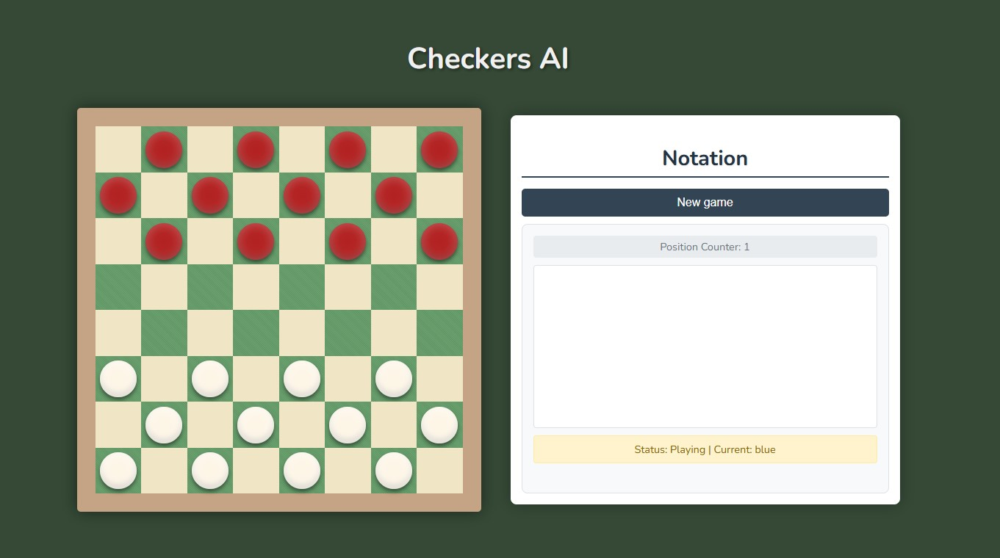
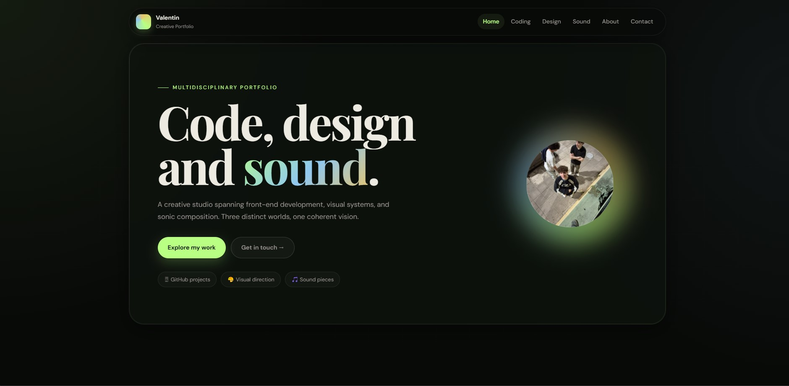
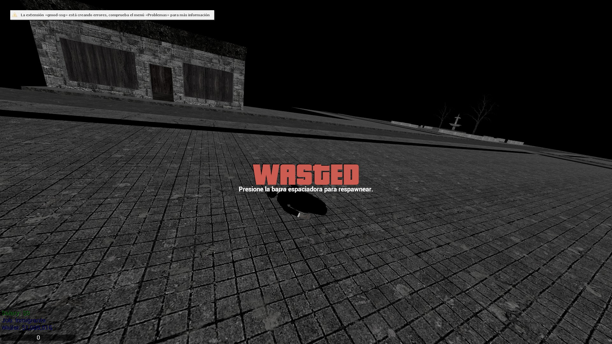

Coding
Projects &
builds.
Front-end experiments, AI projects, game mods, and real tools. Each project is a chance to build something better than the last.
Pinned
Featured projects.
♟ AI
checkers.ai

AI · Game · JavaScript
checkers.ai — Checkers with artificial intelligence
Full checkers game with AI implemented using the Minimax algorithm and alpha-beta pruning. The agent evaluates board positions and makes optimal decisions in real time.
View on GitHub ↗UFC API
REST · Node.js
Back-end · Python
ufc-api — UFC data REST API
API that exposes UFC fighter, event, and stats data. Scraping and parsing of profiles in real time.
View on GitHub ↗Portfolio
HTML · CSS · JS

This siteFront-end · CSS
Portfolio — This very site
Personal portfolio built with pure HTML, CSS, and JavaScript. Glassmorphism, scroll-reveal animations, and modular design.
More work
Other projects.
🎮
GMod Mods
Lua · Garry's Mod

Game modding
Your project
Language · Stack
Your project
Language · Stack
Website · TSX
Gamestack
Letterboxd but for videogames.
Stack
Tools of the trade.
Front-end
HTML, CSS, JavaScript, TypeScript, React, and vanilla-first when possible.
Back-end & AI
Node.js, Python, REST APIs, AI algorithms (Minimax, Alpha-Beta), and web scraping.
Game & Tooling
Lua (Garry's Mod), Git, Vite, Vercel, and Linux CLI every day.